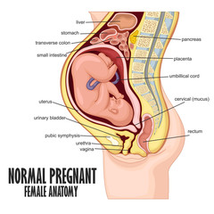
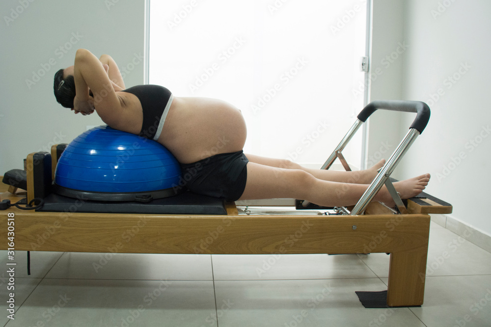
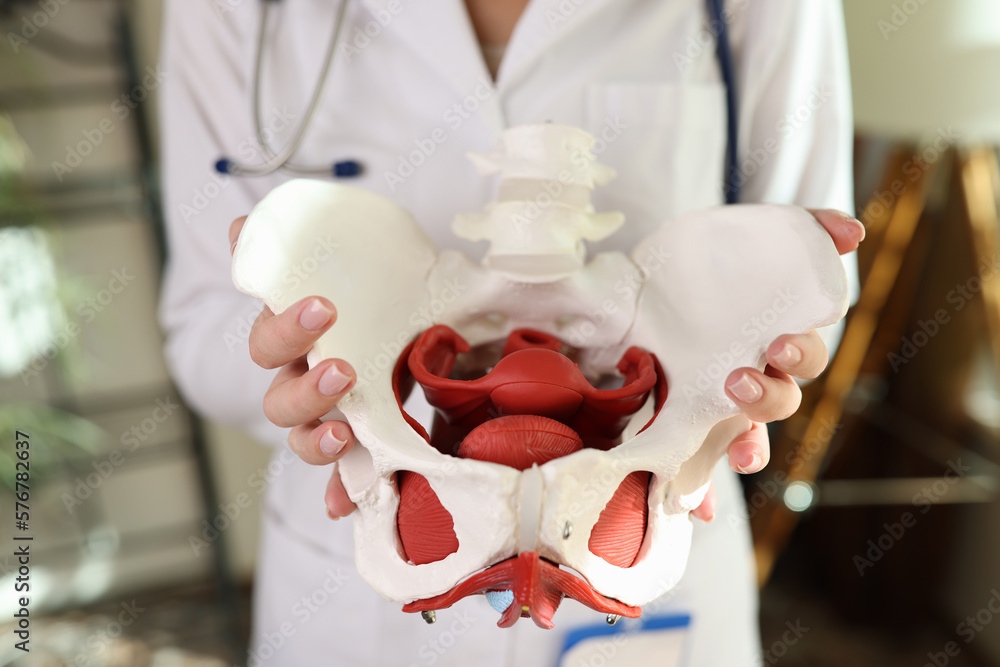

Preparación al parto
En KineGym te ayudamos a transitar esta etapa de tu vida para que puedas mantener o adquirir condición
física
para transitar tanto el embarazo como el postparto con tu cuerpo y tu mente acompañándote.
Las clases se basan en cuatro pilares:
Aprendizaje sobre los cambios morfológicos y funcionales durante el embarazo
Durante el embarazo se producen cambios fisiológicos y metabólicos que afectan la circulación, la respiración, la secreción hormonal, entre otros. Conocerlos es el primer paso para poder gestionar estos cambios y entrar en contacto con nuestro cuerpo en esta etapa.
Ejercicio físico de fuerza, resistencia y movilidad adaptado a esta estapa
Tanto si sos una persona deportista o no, es importante preservar nuestra condición física y aprovechar los benficios que nos da el ejercicio. Todo el trabajo estará adaptado a las particularidades de una persona embarazada.
Aprendizaje sobre la anatomía pélvica, posturas para el parto y suelo pélvico
Una parte del trabajo físico estará orientada al conocimiento y el control de la zona pélvica. para preparar mejor el cuerpo al momento del parto y mejorar la salud y recuperación del suelo pélvico.
Recomendaciones para la vuelta a la actividad postparto
Brindaremos asesoramiento y acompañamiento en tu recuperación física postparto, para que puedas volver a la actividad que quieras hacer con seguridad.